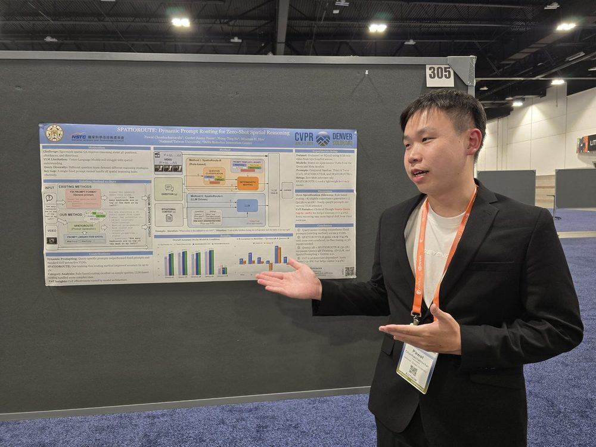

SpatioRoute — Dynamic Prompt Routing for Zero-Shot Spatial Reasoning
When and how a model reasons should adapt to the question — not the other way around.
Spatial question answering over egocentric video asks vision-language models to reason about 3D positions, scene affordances, and directional relationships — zero-shot, with no task-specific training. Existing pipelines apply one fixed prompt to every question, regardless of whether it asks about direction, distance, counting, or affordance.
SpatioRoute replaces the fixed prompt with a router: each question is mapped to a semantically tailored prompt before VLM inference. SpatioRoute-R deterministically maps SQA3D question typologies to specialized templates; SpatioRoute-L uses a small text LLM with few-shot demonstrations — video-free at routing time, so the routing step adds almost no cost.
The headline finding is that question-aware routing beats uniform reasoning: uniform Chain-of-Thought prompting can actually degrade spatial VQA on Qwen-family VLMs. Across multiple VLM families on SQA3D, SpatioRoute improves accuracy by up to 5% — a strong state of the art for zero-shot, video-only spatial VQA without 3D point-cloud input.
The insight carries directly into the doctoral study plan on reasoning for robotics: a robot, like a VLM, must decide when to think and when to act — and adaptive reasoning is what makes that decision tractable.
Co-authors: G. J. Faure · H.-T. Su · W. H. Hsu.
